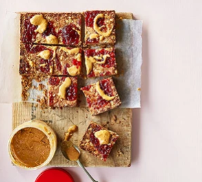

Welcome to our mouthwatering recipes website, a culinary haven where you can explore an extensive collection of delicious recipes from around the world. Whether you're a seasoned chef or a beginner in the kitchen, our website is designed to inspire and guide you on your culinary adventures. Get ready to tantalize your taste buds with our diverse range of recipes, ranging from quick and easy meals for busy weeknights to elaborate dishes for special occasions.
Return home| Dish Name | Ingredients | Process | Result |
|---|---|---|---|
| Hummus & crispy chickpeas sandwich |
|
|
|
| Saucy bean baked eggs |
|
|
Peanut butter & jam flapjacks |
|
|
 |
Welcome to our recipes website, your ultimate culinary destination. Here, you'll find a treasure trove of handpicked recipes that are sure to tantalize your taste buds and inspire your inner chef. From tried-and-true classics to innovative twists on beloved dishes, our collection offers something for everyone.
123 Main Street, Anytown, USA 12345